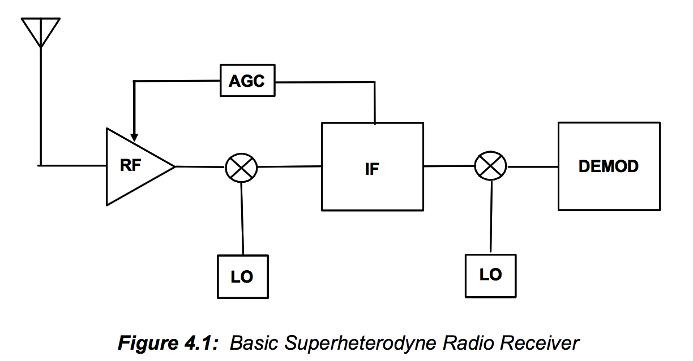
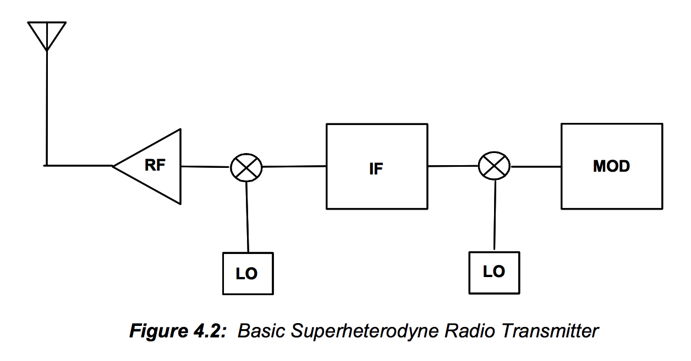
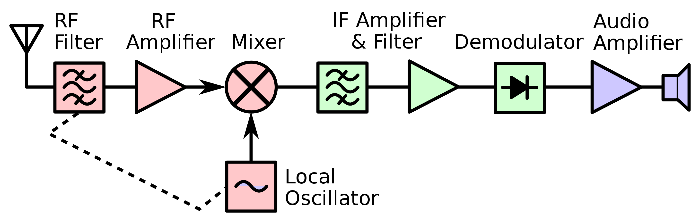
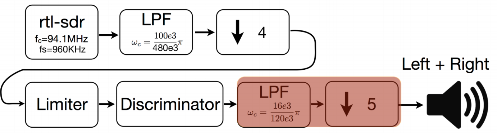

Circuits scare me still, but RF circuits are definitely at the top of the list. I think that they have a lot more considerations when designing (not that I know much) -- in an attempt to demystify what an RF circuit is, I'll synthesize what I find here.
RF stands for radio frequency, which operates anywhere beyond the audible frequency range (>20kHz). The different frequency bands (VHF,UHF, etc.) are mandated by the FCC to prevent disturbance between devices and can be found here.
Radios might feel archaic, but RF is the "magic" behind everything wireless today. If you scanned your badge or ID into a building today, this is the very popular RFID technology at work (which can be a post for another day). For the most part, this technology operates around 13.56 MHz. Basically, if we want to communicate from point A to point B without having a physical connection, radio frequencies will bridge that gap for you without your noticing, unless you have superhuman hearing. RF circuits are used to (1) generate the necessary operating frequencies for communication, and (2) encode the information you are transmitting, usually through different methods of phase or frequency shift keying (FM)-- AM might be outdated/sucks, but QAM is a special method that is very efficient. A few examples of FM are AFSK, BPSK, and QPSK. All these methods of encoding and communication definitely deserve its own post, especially since it's still fresh in my head from 123 :-).
 There are usually two parts for RF devices -- you have the transmitter (TX) (ex: your badge) and the receiver (RX) (whatever thing you're scanning it with). As expected, the RX just does the reverse operations of the TX.
Above is an example block diagram of a radio RX and TX, which is likely the simplest example of an RF circuit. This is a superheterodyne TX/RX shown from (1). Superhet is a specific type of RX that converts a high frequency signal to an intermediate frequency (IF) which is usually easier to work with when we consider different operating frequencies of components that we usually work with and signal bandwidth. For now we'll focus on the RX.
This is a great picture, shameless plug for Wikipedia's superhet article (2).
We have an incoming signal that we receive with our antenna. We're still dealing with signals, so filter it to reduce noise (even more important for HF stuff), and amplify our signal.In our next stage, don't be fooled like I was: that is not a multiplication block ( :( ). It's actually a mixer block. For the RX side it is taking the difference between our two ports (downconverting) and on the TX side it is taking the sum (upconverting) -- this is the heart of the superheterodyne part of the superhet RX. From this we generate an IF that we do more things to because it's still a signal and we like to filter + amplify our desired signal. We can also take this IF signal and further modulate it down to baseband. We did this a lot in 123 too and I think it has to do with the ease of applying frequency analysis to it-- we can design digital filters that are usually (I'll have to look at this later) centered on 0 unless you're modulating it by multiplying it with some frequency. However, considering the fact that our signals are high frequency, and potentially wide bandwidth, we don't know how much we have to modulate our filters by and thus it is much easier just to modulate down to baseband and be in the operating frequencies of alllllll the components!! Also designing things digitally >>.
After modulating our very high radio frequency into the audible frequency range, we can finally decode our information!! :0. The type of demodulation depends on the communication protocol being used (AM/FM). Usually AM will just be envelope detection (Hilbert transform, anyone??) but FM will require some more fancy tricks in our DSP toolbox. For FM radio signals, I have used some combination of resampling, filtering, limiters, and discriminators in order to clean up my signal and apply the right demodulations to hear radio stations, seen below from (3).
At this stage, we have our signal down to an audible frequency and decoded so we can now hear what radio stations are emitting, or in the case of RFID tags, who you are and if you should be let into the building.
Just kidding, this is not an ideal world so we have to consider the many, many problems we haven't discussed yet. What if our oscillator is off by 5 Hz? That's extremely, extremely bad. If you operate at slightly different frequencies, when do you sample? Phase-locked loops. What if your signal sucks sometimes and is fine other times? VGAs. BER may not matter for our usual RFID tags, but for longer transmission, is that accounted for in the embedded design because that's Very Bad (TM). And the biggest question -- how do we minimize noise especially when dealing with high frequency signals that probably have super low signal amplitudes using components with standard but not-good-enough-for-our-application NFs? (simple answer, leave it to the IC designers and just buy a LNA). Hopefully for the rest of the week I'll just go into each component and how its inherent problems are minimized :'). We'll look at some components that weren't mentioned in the radio RX/TX schematic but are often used, such as the balun.
Citations 1. Analog Devices. CHAPTER 4 RF/IF CIRCUITS. Link. 2. Chetvorno. Superheterodyne -- Block diagram of a typical superheterodyne receiver. Link. 3. EE123, Sp19. Lec9A: Lab III.In order to make the most of my summer (and because I'm a pretty forgetful person), I hope to stay accountable to this blog and post things that I learn every day about different fields of EE!
{kind=link}